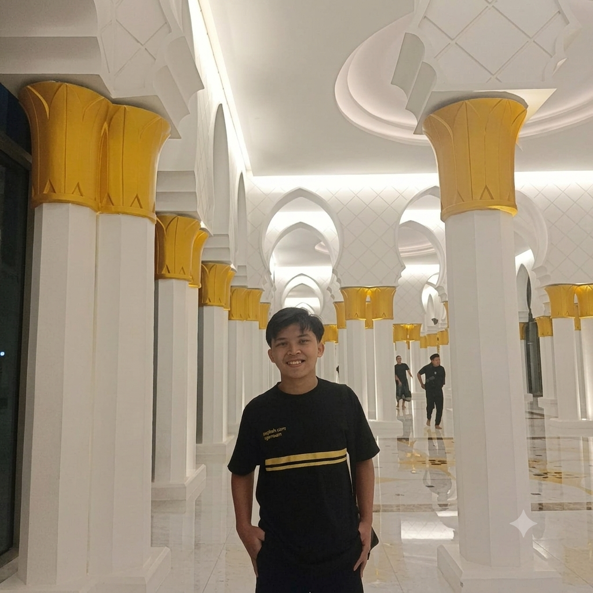

Saya Ghaes Aqwam.
Meta Ads Advertiser & WordPress Website Developer yang membantu bisnis membangun dan mengoptimalkan kehadiran digital melalui iklan yang terarah dan website yang profesional.
Saya berfokus pada pengelolaan Meta Ads, mulai dari perencanaan kampanye, targeting, optimasi, hingga analisis performa berdasarkan data. Di sisi website, saya mengembangkan website dan landing page berbasis WordPress yang disesuaikan dengan kebutuhan bisnis dan tujuan pemasaran.
Dengan menggabungkan advertising dan website, saya tidak hanya berfokus pada mendatangkan traffic, tetapi juga memastikan traffic tersebut diarahkan ke platform digital yang mampu mendukung tujuan bisnis.

Tentang Saya
Selamat datang di portfolio Ghaes Aqwam.
Berawal dari ketertarikan pada bagaimana teknologi dan iklan digital dapat membantu bisnis berkembang, perjalanan di bidang digital marketing dibangun melalui proses belajar, eksperimen, dan praktik langsung. Pengalaman tersebut kemudian berkembang menjadi fokus pada Meta Ads dan WordPress Website Development.
Dalam bidang Meta Ads, fokus pekerjaan mencakup perencanaan kampanye, targeting, optimasi, hingga analisis performa untuk membantu bisnis menjangkau audiens yang lebih relevan dan menggunakan anggaran iklan secara lebih efektif.
Di sisi WordPress, fokusnya adalah membangun website dan landing page yang profesional, responsif, serta disesuaikan dengan kebutuhan dan tujuan bisnis.
Pengalaman sebagai Web Developer Meta Ads di lingkungan Yayasan Alfatihah juga menjadi bagian dari proses membangun kemampuan di kedua bidang tersebut. Setiap proyek menjadi kesempatan untuk menguji strategi, memahami masalah bisnis, dan menghasilkan solusi yang dapat diterapkan secara nyata.

Dua bidang utama yang menjadi fokus adalah advertising dan website.
Bukan hanya mendatangkan traffic melalui iklan, tetapi juga memastikan bisnis memiliki website atau landing page yang mampu menjadi bagian dari proses pemasaran. Kombinasi keduanya memungkinkan strategi digital dibangun secara lebih terintegrasi dari menjangkau audiens hingga mengarahkan mereka menuju tindakan yang diinginkan.
Portfolio ini menjadi dokumentasi dari pengalaman, proyek, dan proses yang terus dikembangkan dalam membangun solusi digital untuk kebutuhan bisnis.
Meta Ads
Merancang, menjalankan, dan mengoptimalkan kampanye Meta Ads untuk membantu bisnis menjangkau audiens yang relevan. Mencakup campaign setup, audience targeting, optimasi, monitoring, dan analisis performa berdasarkan data.
90%WordPress Website
Membangun website dan landing page berbasis WordPress yang profesional, responsif, dan disesuaikan dengan kebutuhan bisnis. Fokus pada struktur halaman, pengalaman pengguna, serta website yang mendukung tujuan pemasaran.
90%Ads & Conversion
Menghubungkan strategi iklan dengan website atau landing page agar traffic yang diperoleh memiliki tujuan yang jelas. Fokus pada alur iklan → landing page → tindakan pelanggan.
80%Performance Analysis
Menganalisis performa kampanye menggunakan data seperti CTR, CPC, CPM, CPA, dan ROAS untuk menemukan peluang optimasi dan membantu penggunaan anggaran iklan secara lebih efektif.
75%Resume
Pengalaman dalam Meta Ads dan WordPress Website Development diperoleh melalui keterlibatan langsung dalam berbagai proyek digital. Fokus pekerjaan mencakup pengelolaan kampanye iklan, pengembangan website dan landing page, serta analisis data untuk mendukung kebutuhan pemasaran.
Pengalaman Kerja
Pengalaman profesional dibangun melalui keterlibatan langsung dalam pengelolaan iklan digital dan pengembangan website. Setiap proyek menjadi bagian dari proses memahami kebutuhan bisnis, menjalankan strategi, serta melakukan optimasi berdasarkan data dan hasil yang diperoleh.
Meta Ads Advertiser & WordPress Website Developer
Yayasan Alfatihah
Mei 2024 – 1 AgustusBerperan dalam mendukung kebutuhan digital yayasan melalui pengelolaan Meta Ads dan pengembangan website berbasis WordPress.
- Mengelola dan mengoptimalkan kampanye Meta Ads sesuai tujuan kampanye.
- Melakukan audience targeting dan monitoring performa iklan.
- Menganalisis metrik seperti CTR, CPC, CPM, CPA, dan ROAS untuk menemukan peluang optimasi.
- Membangun dan mengembangkan website serta landing page menggunakan WordPress.
- Menyesuaikan struktur dan konten landing page dengan kebutuhan kampanye.
- Berkolaborasi dengan tim untuk mendukung pelaksanaan dan evaluasi strategi digital.
Pendidikan
PKBM Cahya Mulya
Paket C (Setara SMA/SMK)
2020-2022Menyelesaikan pendidikan melalui Program Paket C, disertai proses pembelajaran mandiri dan praktik langsung dalam bidang digital advertising dan website development.
Pengembangan Keahlian
Sebagian besar kemampuan di bidang digital dikembangkan melalui self-learning, eksperimen, dan praktik langsung pada berbagai proyek.
Fokus pengembangan saat ini meliputi:
- Meta Ads — Campaign Setup, Targeting, Optimization & Performance Analysis
- WordPress — Website & Landing Page Development
- Ads & Conversion — Menghubungkan traffic iklan dengan website atau landing page
- Performance Analysis — Evaluasi kampanye berdasarkan data dan metrik pemasaran
Bukti Kompetensi & Pengalaman
Portfolio ini tidak hanya berisi hasil proyek, tetapi juga dokumentasi pengalaman dan pembelajaran yang mendukung kemampuan di bidang Meta Ads dan WordPress Website Development.
Mulai dari pengalaman kerja langsung, sertifikat pelatihan, hingga proyek yang pernah dikerjakan, setiap dokumentasi menjadi bagian dari proses membangun kompetensi secara konsisten melalui praktik, pembelajaran, dan pengalaman nyata.